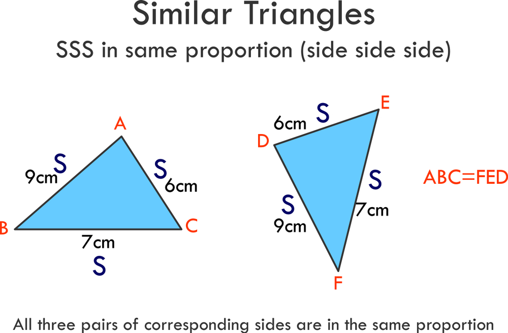

Similar triangles are triangles with the same shape, although their sizes may vary.
Two triangles are similar if the corresponding angles are congruent, and the corresponding sides are proportional.
In this way, we can find the dimensions of one triangle with the help of another.
Albeit similar in concept, Similarity and Congruence are NOT the same; as Congruence deals with being equal in both shape and size.

Angle-Angle Similarity (AA)
- If any two angles of a triangle are equal to any two angles of the other, then the two triangles are similar.
If ∠ A = ∠X and ∠C = ∠Z then ΔABC ~ΔXYZ.
Side-Angle-Side Similarity (SAS)
- If the two sides of a triangle are in the same proportion of the two sides of the other, and the angle inscribed by the two sides in both triangles are equal, then two triangles are similar.
If ∠A = ∠X and AB/XY = AC/XZ then ΔABC ~ΔXYZ.
Side-Side-Side Similarity (SSS)
- If all three sides of a triangle are in proportion to the three sides of the other, then the two triangles are similar.
If AB/XY = BC/YZ = AC/XZ then ΔABC ~ΔXYZ.
©2024 by Christian Robert L. Daquipil